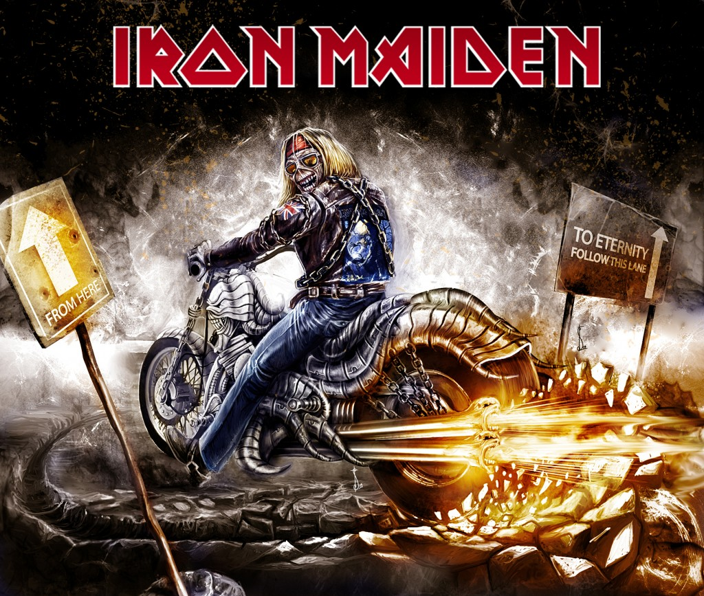

Az Iron Maiden egy angol heavy metal együttes, a világszerte több mint 100 millió eladott lemezével a műfaj egyik legsikeresebb képviselője. Az együttest Steve Harris basszusgitáros alapította 1975-ben.A heavy metal megkerülhetetlen klasszikusaivá váltak, a zenekar pedig kereskedelmi sikereinek csúcsára ért.
Az 1990-es években tagcserék és a zenei klíma változása nehezítették az együttes munkáját, de a 2000-es évektől kezdve ismét egyre sikeresebbek.
Az 1970-es évek végén kibontakozó New Wave of British Heavy Metal hullámmal kerültek be a köztudatba, debütáló lemezük pedig Iron Maiden címmel 1980-ban jelent meg.
Az Iron Maiden zenéje nyomán a heavy metal több altípusa jött létre, többek között a power metal és a speed metal, valamint nagy hatással volt a két gitárt együtt megszólaltató heavy metal hangzásra is. Karrierjük során több mint 2000 koncertet adtak, és gyakran említik őket úgy, mint az egyik legnagyobb hatású metalzenekart a rocktörténelemben.
